Detailed explanation
Companion to the README. Sections: pipeline · library · DetFill · Hint-AUC · reproduction · determinism · environment · releases · added features.
Pipeline
Deterministic hint generation (DHT) turns one illustration into a fixed set of colour hints:
- Region segmentation — Felzenszwalb (scale 100, σ 0.5, min size 100) on the illustration at its original
resolution (the Danbooru2021 file; the 512×512 copies of the dataset are the ground truth for training and metrics,
not the segmentation input); region maps are stored at 64×64 (nearest-neighbour downsampling), which is the paper's
hint resolution. The number of regions depends on the input resolution, so hints regenerated from a 512×512 copy
differ from the stored maps by construction (see E9 in
reproduce/examples/). - Skeleton — Zhang–Suen thinning of each region, then a 3×3 dilation.
- Longest path — the longest path of the skeleton of each region (FilFinder2D 1.7.2 in the paper, branch and skeleton thresholds 3 px); the path is intersected with its region.
- Scribble hint — the path pixels, coloured with the region's mean colour.
- Dot hint — one pixel per region: the in-region path pixel with the smallest total Manhattan distance to the other
in-region path pixels (first index on ties). This is the rule behind the released maps; the paper's text describes a
truncated mean of the path coordinates (available as
dot_method="mean"). - Hint ratio α — at evaluation time the hints of the largest ⌊α·n⌋ regions are kept (Table II protocol); the Table III protocol keeps the first ⌊α·n⌋ regions in ascending label order instead ("fixed random order").
What the library produces for one illustration:
| Input | Region map | Flatten (region mean) | Scribble hints | Dot hints |
|---|---|---|---|---|
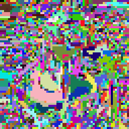 |
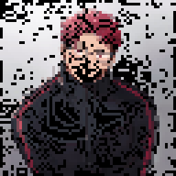 |
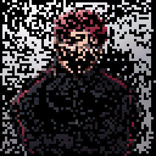 |
| α = 1 % | α = 10 % | α = 50 % | α = 100 % |
|---|---|---|---|
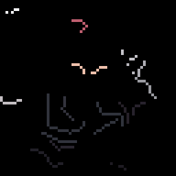 |
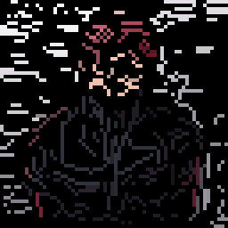 |
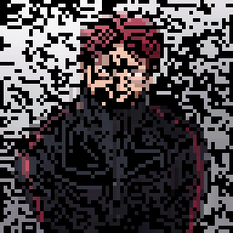 |
 |
Library
hintauc (pip install hintauc; pip install "hintauc[perceptual]" adds the perceptual metrics) exposes:
hintauc.generate_hints(image, size=64, path_method="filfinder", dot_method="medoid", segmenter="felzenszwalb")→HintResultwith.at_ratio(alpha, hint_type="scribble"|"dot", tie_break="default"|"stable")(returns colour and mask arrays in OpenCV BGR order) and.save(prefix)(writes the six canonical files*_region64,*_scribble_col64,*_scribble_mask64,*_dot_col64,*_dot_mask64and*_flatten_img64used by the DetFill loader).hintauc.Evaluator(metrics=(...))— MSE, PSNR, SSIM (256×256, values in [0, 1]), LPIPS (AlexNet), OpenCLIP (ViT-B-32, laion2b), DINOv2-base, DreamSim; the same formulas as the paper'sevaluation/eval_single_run.py.- Metrics added after the paper (opt-in, never used for a published number):
mae,ms_ssim(torchmetrics),deltae(mean CIEDE2000 colour difference in CIELAB via scikit-image — a direct colour-fidelity measure),lpips_vgg,dists(DISTS_pytorch), and the set-levelhintauc.evaluate_set(pred_dir, gt_dir, metrics=("fid", "kid"))(Inception features via torchmetrics + torch-fidelity; KID is the better choice for small sets).hintauc.ALL_METRICSlists the per-image metrics,hintauc.SET_METRICSthe set-level ones;LOWER_IS_BETTERgives each metric's direction. hintauc.hint_auc,hintauc.evaluate_hint_curve— trapezoidal integration over α ∈ [0, 1];hintauc.DEFAULT_ALPHASis the paper grid {0, 0.01, 0.03, 0.05, 0.10, 0.25, 0.50, 1.00}.hintauc.evaluate_colorizer(fn, samples)andhintauc curve pred_root gt_direvaluate a model of your own (Evaluate your own model);hintauc demoruns the whole chain on a synthetic image.- Command line:
hintauc generate image.png --ratio 0.1 [--path_method geodesic] [--dot_method mean],hintauc eval pred_dir gt_dir --metrics mse psnr ssim,hintauc curve pred_root gt_dir,hintauc demo.
Two longest-path implementations:
path_method |
Method | Dependencies | Deterministic? |
|---|---|---|---|
filfinder (paper) |
3×3 dilation, then FilFinder2D medial axis, pruning by length, longest path | fil_finder, astropy |
no: FilFinder breaks medial-axis ties with an unseeded generator, so a few pixels move from run to run even in one environment (six runs on one 938-region image gave six different scribble masks, 1,960–1,963 pixels; the region count and the number of dots never change) |
geodesic |
longest shortest path (geodesic diameter) of the 8-connected skeleton, no corner cutting, raster-order ties; exact for trees and for components with cycles | NumPy only | yes, bit-exact |
Do not mix maps produced with different methods in one evaluation; the paper's numbers and the released stored maps
correspond to filfinder. On 20 stored test maps (16,098 regions, of which FilFinder returns a path for 15,684) the
two methods return an identical path in 91.8 % of those regions (mean IoU 0.969) and the dot coincides in 95.5 %.
DetFill
- A pixel-space Brownian Bridge diffusion model (BBDM fork) conditioned on the line art and the hint maps. State: 5 channels (line art, hint mask, RGB); condition: 5 channels (line art, hint mask, masked RGB hints); U-Net input 10 channels. Scribble model: 96 base channels; dot model: 64 base channels; 200 epochs, effective batch 20 (10 GPUs × batch 1 × gradient accumulation 2), seed 1234, 200 sampling steps at inference.
- Data layout, configs, training and inference commands: detfill/README.md.
detfill/run_inference.shruns the ratio grid;dataset_config.hint_orderselects the Table II (area) or Table III (label) protocol;--gpu_ids -1runs on CPU. - Training-time hint sampling follows the paper (p = ⌊n·u⌋, u ~ U[0, 1), so the fully hinted case is never seen in
training);
dataset_config.include_full_hint: truechanges this. The released checkpoints use the paper setting.
Hint-AUC
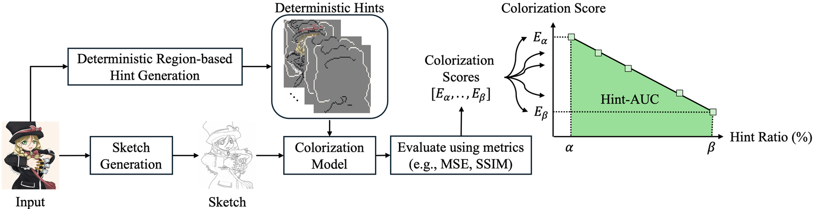
For each ratio α of the grid the model colorizes the test set with the deterministic hints at that ratio; the per-ratio mean of each metric is integrated over α with the trapezoidal rule (the α range has length 1, so the integral is the range-normalised value). Tables report the mean ± sample standard deviation of the Hint-AUC over the three line-art sources (XDoG, sketch simplification, SketchKeras), never over random seeds — the protocol is deterministic.
DetFill colorizations for one sketch as the scribble hint ratio grows:
| Input sketch | Ground truth |
|---|---|
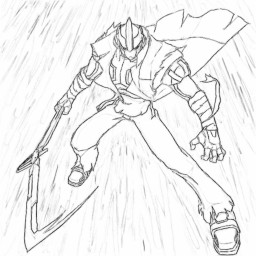 |
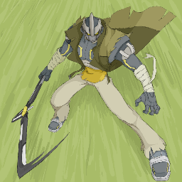 |
| α = 1 % | α = 10 % | α = 50 % | α = 100 % | |
|---|---|---|---|---|
| Scribble hints | 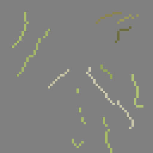 |
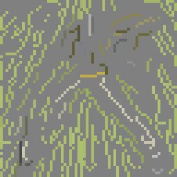 |
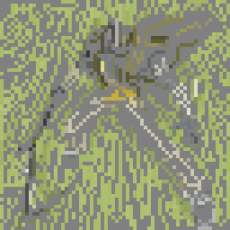 |
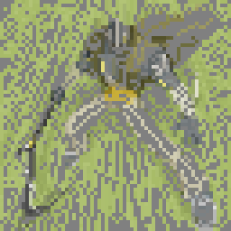 |
| DetFill | 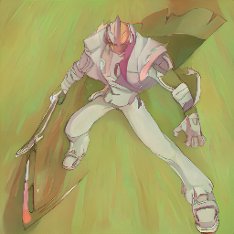 |
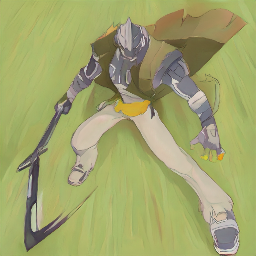 |
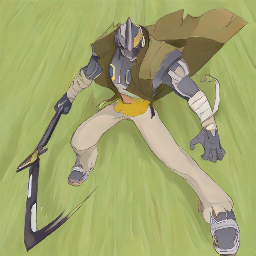 |
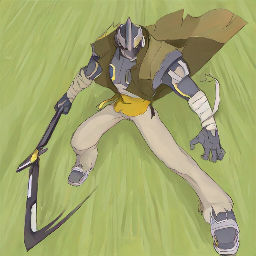 |
Reproduction
Four layers, documented in reproduce/README.md:
- A. Tables from released metrics —
reproduce/scripts/A1_tables_from_released_metrics.pyrebuilds Table II (DetFill scribble row), Table III (DetFill scribble row) and the supplementary α-grid, segmentation-dependency, seed-sensitivity and Diffusart-retrain tables from the per-ratio metric files inreproduce/expected/, checking every printed cell (322 of 324 match; the two exceptions are the SSIM rounding and the Diffusart-retrain SSIM provenance gap listed inreproduce/README.md).A2_userstudy_glmm.pyrebuilds Tables IV/V and the GLMM statistics from the anonymised trial table (all values match). - B. Example suite —
reproduce/examples/run_examples.sh(no arguments) re-runs each experiment on example illustrations (4 by default, 12 withEXAMPLES_MODE=full) with the released checkpoints and compares with the authors' reference run and with the paper's archived outputs of the same images; reproduce/examples/README.md. - C. Verbatim launchers —
reproduce/paper_experiments/. - D. Full-scale rows —
reproduce/scripts/run_hauc_pipeline.sh+eval_per_ratio.py(needs the Danbooru2021 originals; line art and hint maps are released). - Fig. 9 —
replicability/run.sh(replicability/README.md).
What is exact and what is not
- Exact: the table recomputation (A), the user-study numbers, the metric evaluator (to ~1e-6 with the pinned
packages; SSIM to 5e-5), the region selection at every ratio with
tie_break="stable"(the default ofevaluate_colorizer, the demo and the quick start). The DetFill loader andtie_break="default"order equal-area regions with NumPy's defaultargsort, which is not only build- but CPU-dependent: NumPy dispatches to a SIMD sort on AVX-512 machines that orders equal keys differently (on the 4731016 example, 23 area values are shared by several regions; the 10 % selection has 883 hinted pixels with the AVX-512 path and 889 without it, 882 with the stable order). Re-runs of the loader-based protocol on other hardware can therefore differ at intermediate ratios even with the stored maps. Without PyTorch the evaluator's Pillow backend reproduces the torchvision resize to about 1e-6 per pixel; only the SSIM fallback (scikit-image) differs, by a few 1e-4.result["protocol"]["backend"]names the backend of every number. - Deterministic per machine, not bit-exact across machines: DetFill inference is seeded, but CUDA kernels differ
between GPU generations and CPU, so re-generated outputs of the same image agree with the paper's archived outputs
only approximately: about 25–30 dB PSNR at the Table II hint ratios in the example suite, while at a 10 % hint ratio
the sampler can drift to a different, equally plausible colorization (11–20 dB PSNR between an RTX 2080 Ti, an RTX
A6000, a CPU run and the printed Fig. 9 panels; see
replicability/README.md). Per-image metrics therefore move a little; we have not re-run a complete table row on different hardware, so expect small differences in the last printed digit of a re-run table. - Not bit-reproducible, even in one environment: FilFinder longest paths (the medial-axis tie-breaking is
unseeded; a few pixels per image differ between runs, region and dot counts do not). The stored maps are the reference
for every printed number; the
geodesicmethod is bit-exact everywhere. "Deterministic" in the paper's sense means that the hints are a fixed function of the region map rather than random samples, and that the stored maps make every evaluation repeatable. - Not covered by released per-ratio data: baseline rows (PaintsTorch, Diffusart, ColorizeDiffusion), the DetFill dot rows of Tables II/III, the ImageNet tables and the earlier per-source tables; they can be regenerated with layer D and the respective code; the ColorizeDiffusion fine-tuned weights are in release v1.5.
Environment
Hardware behind the timings. Machine A: NVIDIA RTX A6000 (48 GB), 2 × AMD EPYC 9124 (32 threads), 377 GB RAM. Machine B: NVIDIA GeForce RTX 2080 Ti (11 GB), 2 × Intel Xeon Gold 6226R (32 threads), 187 GB RAM. Both Ubuntu 22.04, driver 535, CUDA 12.2. Fig. 9: 3 min on A, 4–5 min on B, 30 min on the CPUs of A (16 threads). Example suite and the full-scale estimates: measured on B; an A6000-class GPU is roughly twice as fast.
replicability/environment.yml(used byreplicability/run.shandreproduce/examples/run_examples.sh): Python 3.9, PyTorch 2.5.1 + CUDA 12.4 wheels (run on CPU too), NumPy 1.26.4, scikit-image, OpenCV, FilFinder 1.7.2 + astropy 5.3.4, pytorch-lightning 1.9.3, torchmetrics 1.4.0.reproduce/requirements-metrics.txt: open_clip_torch 3.3.0, dreamsim 0.2.1, transformers 4.57.6, lpips 0.1.4, torchmetrics 1.4.0 (the perceptual metrics download their weights on first use, ~2 GB).detfill/environment.yml: the paper's training/inference environment (NumPy 2.0.2). The order of equal-area regions in the hint selection follows NumPy's defaultargsort, which can differ between NumPy builds;tie_break="stable"removes this dependence (the published results used NumPy 2.0.2 with the default order).
Releases
| Release | Contents |
|---|---|
| v1.0 | paper checkpoints (scribble 96-ch, dot 64-ch), stored test-split hint maps |
| v1.1 | DanbooRegion- and SLIC-trained scribble models |
| v1.2 | Diffusart-retrain models (our Diffusart re-implementation), later 96-channel ImageNet DetFill models, ImageNet test hint maps |
| v1.3 | test-split line art (SketchKeras / sketch simplification / XDoG), DanbooRegion / SLIC / Felzenszwalb test hint maps, example bundle, user-study stimuli |
| v1.4 | the paper's natural-image (ImageNet) models, the earlier-submission scribble model, 32 / 64-channel scribble models, archived configs |
Sizes and SHA-256 of every file: checkpoints/README.md.
Added features since the paper
hintauclibrary + CLI;path_method="geodesic";dot_methodandtie_breakoptions;hint_orderprotocol switch;include_full_hinttraining option; CPU inference; flat user-configurable data layout; deterministic region-id colours; segmenter options in the generator; metrics beyond the paper's seven (MAE, MS-SSIM, CIEDE2000, LPIPS-VGG, DISTS, set-level FID / KID);evaluate_colorizer/hintauc curve/hintauc demowith input checks, protocol records and one evaluation backend; the replicability script; the reproduction package; releases v1.1–v1.4 (added features).- A few minor issues of the original implementation were fixed along the way to make the library more usable; what is bit-exact with respect to the published numbers and what is not is listed in reproduce/README.md.
Third-party components and their licenses: THIRD_PARTY_NOTICES.md.